VOL.001 · DAILY REVIEW
2026年10月14日 · 星期三
编辑部 · OUTDOOR DESK
★ 本期看点：LOEWE×On · DESCENTE×N.HOOLYWOOD · 攀山鼠AW26 · WOOLRICH上海店 · Helinox中国首店 · 始祖鸟Postour · DYNAFIT西安店 · HUNTER 170周年 ★
编者按 · FROM THE EDITOR
十月过半，户外产业消息密集：Mounster山系文化一周快讯带来LOEWE×On、DESCENTE×N.HOOLYWOOD等重磅联名；攀山鼠发布AW26徒步系列；WOOLRICH在南京西路开出"不卖货"的档案馆；Helinox把中国首店落进上海iapm……本期《户外视野时报》辑录十篇公众号内容，从品牌开店、联名新品到消费趋势，速览今天的户外世界。点击各条标题或图片，即可跳转阅读原文。
壹
9月25日，迪卡侬E-HIKE运动助力装备正式在北京、上海、深圳上市，79元起即可申请体验；同月，孵化该产品的亚洲创新中心在深圳迎来成立一周年。
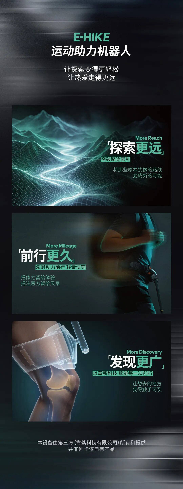
▲ E-HIKE运动助力机器人宣传海报（图/迪卡侬） · 点击图片查看原文
· E-HIKE瞄准户外玩家、徒步初学者、中老年人及体能受限人群，多模式自动匹配步态；
· 亚洲创新中心2025年在深圳启用，以"在本地试验，向全球推广"为路径，一年为近20个本地化创新项目提供消费者洞察；
· 今年5月24日，KIPRUN Kipnext 3D打印跑鞋在深圳全球首发；
· 2025年迪卡侬净销售额168亿欧元，净利润9.1亿欧元，同比增长16%，在华门店超200家。
原文：子弹财经
贰
10月13日，美国高端生活方式品牌WOOLRICH中国首家概念店THE ARCHIVE「WOOLRICH档案馆」在上海南京西路兴业太古汇开业，在寸土寸金的核心商圈拿出一整层楼讲述品牌近200年历史。
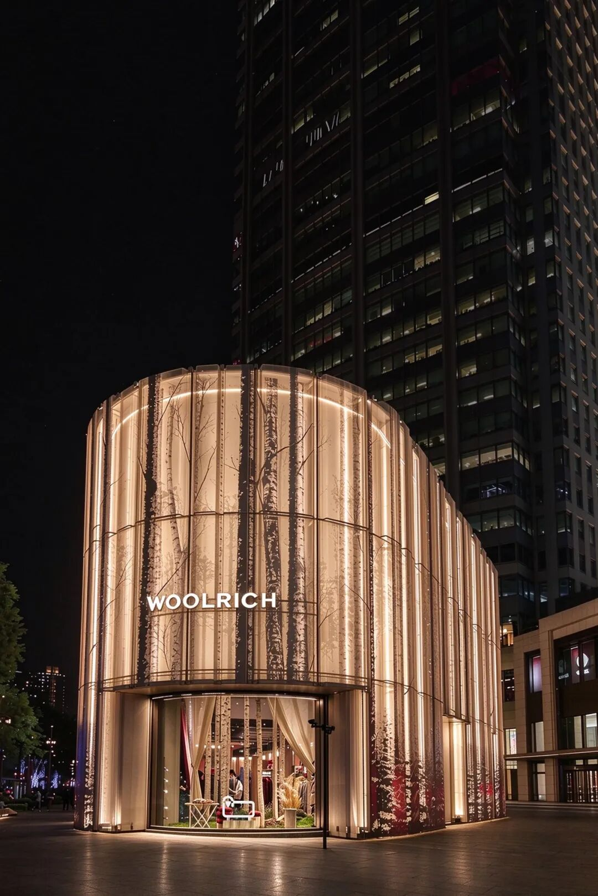
▲ 南京西路WOOLRICH概念店外立面，白桦林设计取自品牌诞生地宾州山林 · 点击图片查看原文
· 品牌1830年创立于宾夕法尼亚，"WOOL+Rich（里奇）"即品牌名由来；
· 二楼档案展以始于1850年的红黑水牛格为主线，讲述"铁路背心"、1939年南极远征全羊毛服装、1972年北极派克等经典；
· 三条产品线：主线MAIN LABEL、户外线OUTDOOR LABEL、高端BLACK LABEL；覆盖全球36国、3000余个销售点；
· 已入驻四家野奢酒店松赞；预计明年中国首家WOOLRICH旗舰店启幕。
原文：华丽志
叁
Helinox上海快闪店10月10日17:00在上海环贸iapm商场L1中庭开幕，持续至10月27日，现场带来三款尚未公开发售的中国限定及周边单品。
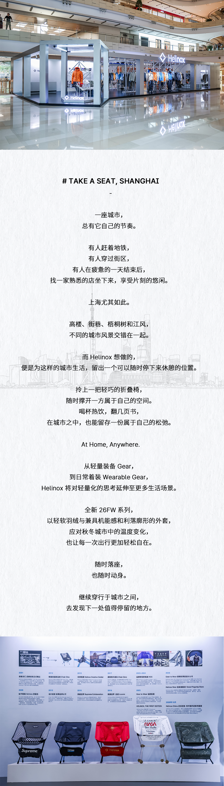
▲ Helinox上海快闪店，主题"TAKE A SEAT, SHANGHAI" · 点击图片查看原文
· 限定单品：01「福气满满」中国限定水杯（红/黑双色）、02限定轻便衣架、03「福气发发」月亮椅（Chair One红色特别版）；
· 同步展示品牌历程：2001年品牌确立、2009年轻量化诞生、2012年Chair One、2026年中国首店；
· 现场陈列含Supreme、NASA等联名折叠椅；26FW系列轻软羽绒与机能外套同步亮相。
原文：环贸iapm商场
肆
9月21日，DYNAFIT国内首家形象店正式亮相西安中大国际商业中心3层，是品牌在中国西北乃至国内的首家线下门店；宝胜国际已成为中国总代理并于2025年重启品牌运营。
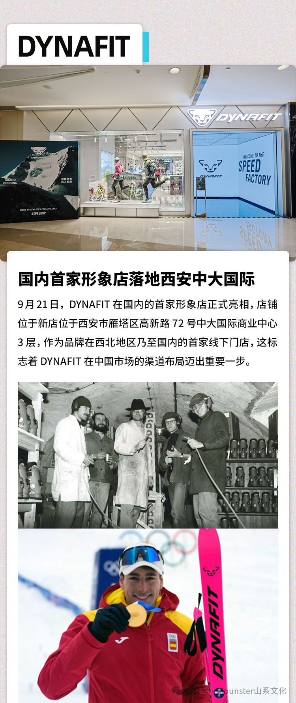
▲ DYNAFIT国内首家形象店：西安雁塔区高新路72号中大国际3层 · 点击图片查看原文
· 品牌1950年诞生于奥地利滑雪靴领域，2005年启用雪豹标识，2012年推出越野跑系列；
· 空间设计以冰川银灰为主调，陈列含DNA系列、越野包、ALPINE硬壳、ULTRA 100 V3越野跑鞋；
· 开业当天德国全球总经理Philip Tavell亲临西安与越野跑爱好者交流。
原文：Mounster山系文化
壹
9月3日，瑞典户外品牌Klättermusen发布Autumn/Winter 2026系列，同步推出影像企划「The Call」，围绕秋冬多日徒步与复杂山地环境展开。
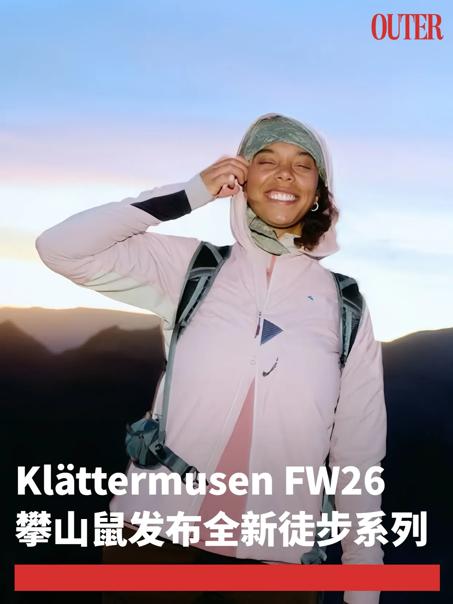
▲ Klättermusen FW26 攀山鼠发布全新徒步系列（图/OUTER） · 点击图片查看原文
· Allgrön 2.0 Jacket：三层Cutan面料，防水>20,000mm、透湿20,000g/m²/24h，含RECCO反射器；
· Gondul 2.0 Hood Jacket：PrimaLoft保温，男款M码约410g，可压缩收纳作备用保暖层；
· Gere 3.0 Pants：Levitend弹性面料+Oculus Icebreaker加固，侧通风拉链、安全口袋；
· 另推出Balderus再生羊毛中层与Embla技术羊毛混纺中层；哥德堡、斯德哥尔摩新店及纽约限时空间同步扩张。
原文：装备索引
贰
始祖鸟推出Postour Boot，将防水雪靴与可拆卸保暖拖鞋组合为二合一结构，美国官网已上架，男款售价300美元，中国市场发售时间待定。
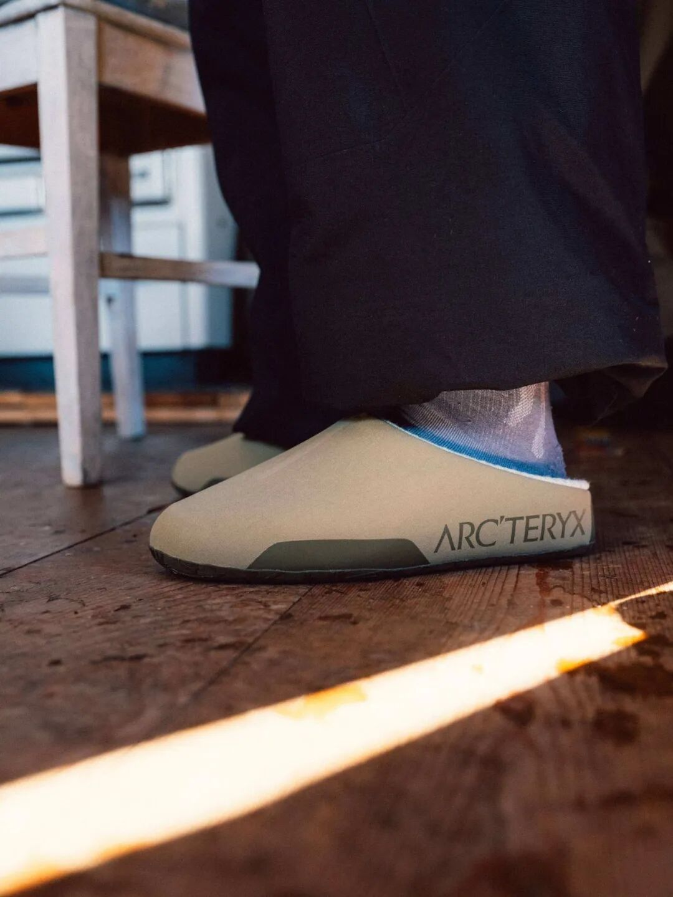
▲ Postour Boot内层拖鞋：拆出后自带TPU抓地外底，可独立穿着 · 点击图片查看原文
· 外靴GORE-TEX防水至高筒靴口，顶部抽绳收口防积雪雪泥；
· Vibram Arctic Grip外底针对结冰路面提供抓地力；
· 外靴与内层拖鞋均填充Coreloft合成保温材料；
· 使用场景：雪上活动结束脱下滑雪靴，换Postour在营地走动，进屋取出内层拖鞋单独穿着。
原文：营事编集室 Vol.275
叁
日本户外品牌neru design works公布一辆橙色Rover Mini改装车，将设计探索从露营装备延伸到汽车；实车将于11月在爱知FIELDSTYLE展出。
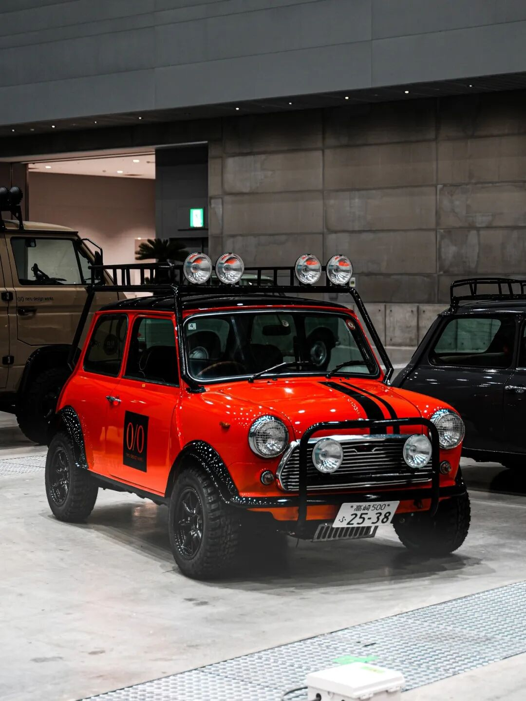
▲ neru设计works橙色Mini改装车：车顶行李架、探照灯、越野防撞杠 · 点击图片查看原文
· 项目由堀田自动车服务协助实现，品牌负责设计构想，工程团队落地实车；
· 设计刻意跳过改装案例与市场趋势研究，希望减少既有风格影响；
· 预计售价400万日元（未含税），第二台车计划年内完成并通过日本车辆检验后正式接单。
原文：营事编集室 Vol.275
肆
MSQUARE在BLACK Label系列推出适配Brompton"小布"的车头托特包，通过背部支架连接车头载物座，到达目的地取下即可手提或肩背。
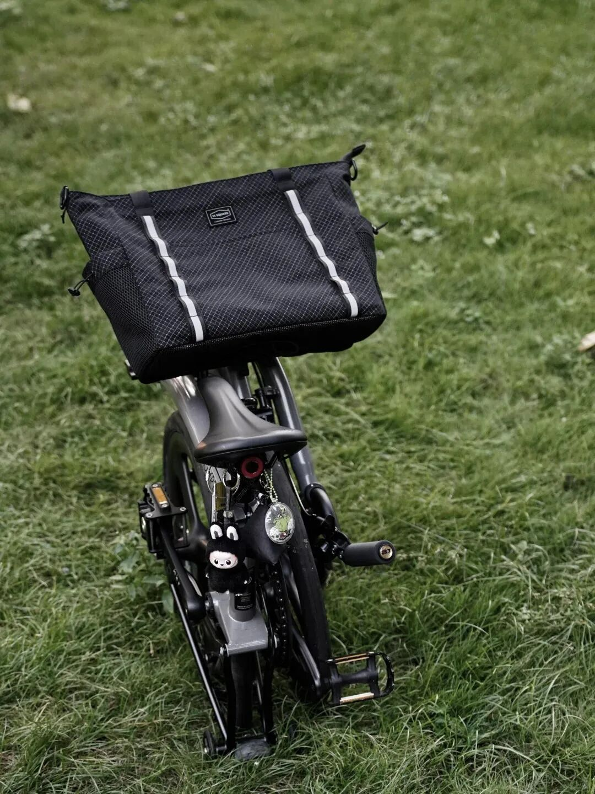
▲ MSQUARE车头托特包：可拆"排骨架"，配电脑隔层与反光条 · 点击图片查看原文
· 背部可拆卸"排骨架"承担安装支撑，拆下后保留托特包柔软形态；
· 电脑隔层三明治网布缓冲+可调节插扣；前袋、两侧抽绳袋分区收纳；
· 尼龙材质，36×12×27cm，约490克、10升、承重10公斤，斜挎背带另购。
原文：营事编集室 Vol.275
伍
纹身艺术家大敏创立的Filoméla推出女神2.0 Sofubi软胶作品，以PVC两件式结构重新呈现品牌标志性女神形象，并加入适配GOALZERO户外灯的结构，10月14日13:00发售。
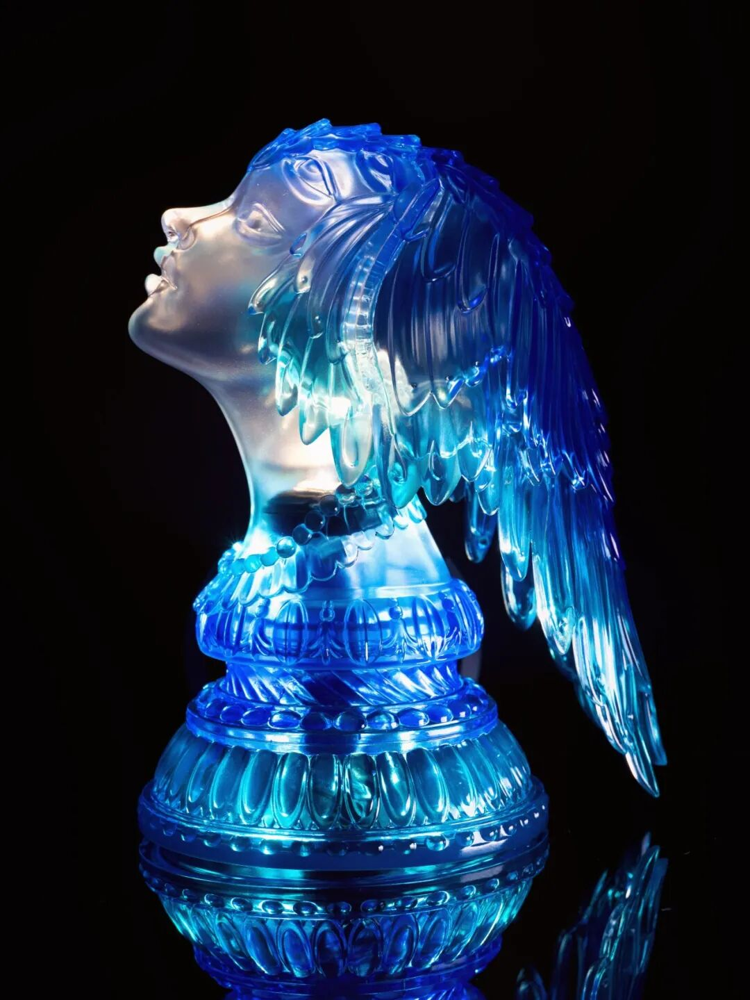
▲ 女神2.0 Sofubi：蓝色透明外壳保留层叠纹饰与垂落羽翼细节 · 点击图片查看原文
· 699元/件，现货60件，每人限购一件，采用Filoméla内部邀约方式；
· 尺寸160×200×117mm；
· 底座受搪胶工艺限制可能存在局部气泡，购买时需留意。
原文：营事编集室 Vol.275
陆
凯乐石推出「Stay Warm, Stay Together」主题企划，携手曾山、张清伟（野人）、刘峻甫、周松及Ales Cesen等攀登者讲述搭档情谊，GT雪山羽绒服以1000蓬鹅绒与Zero-G超轻量面料实现高保暖与轻量化。
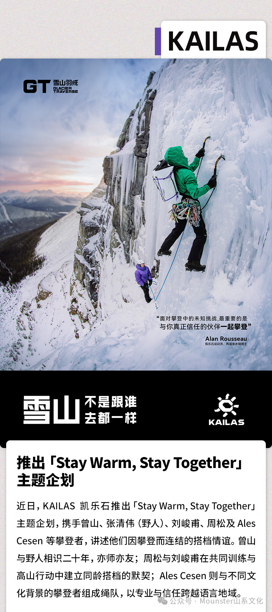
▲ KAILAS GT雪山羽绒：雪山不是跟谁去都一样（图/KAILAS） · 点击图片查看原文
· 主题标语"雪山，不是跟谁去都一样"，强调攀登搭档间的信任协作；
· 品牌运动员影像9月下旬起登陆北京、上海、深圳等13座城市户外大屏；
· GT雪山羽绒服：1000蓬松度鹅绒+Zero-G超轻量面料，助力攀登者节省体能。
原文：Mounster山系文化
壹
2026秋冬，罗意威携手瑞士运动品牌On推出鞋履与成衣联名系列，以艺术探索为灵感，正式发布Cloudsolo Hiker联名徒步风休闲运动鞋与Cloudtilt Cosmic联名轻量休闲鞋。
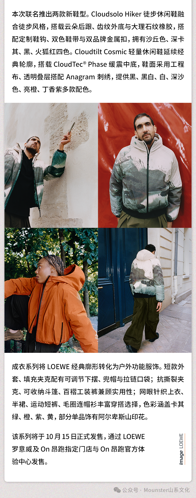
▲ LOEWE × On 联名系列穿搭大片（图/Image LOEWE） · 点击图片查看原文
· Cloudsolo Hiker：云朵后跟、齿纹外底、大理石纹橡胶与双品牌金属扣，沙丘色/深卡其/黑/火狐红四色；
· Cloudtilt Cosmic：CloudTec® Phase缓震中底+Anagram刺绣，黑、白、亮橙、丁香紫等多色；
· 成衣将LOEWE廓形转化为户外功能服饰，含阿尔卑斯山印花短外套、填充夹克、工装裤等；
· 广告大片由Rosie Marks掌镜，Joan Jonas、Martine Syms、Tarek Atoui三位艺术家出镜；
· 10月15日于LOEWE及On指定门店与体验中心发售。
原文：Mounster山系文化
贰
9月24日，迪桑特携手N.HOOLYWOOD推出首个联名系列，基于ALLTERRAIN 81专业滑雪服科技，将应对严苛环境的功能设计转化为都市日常服饰。
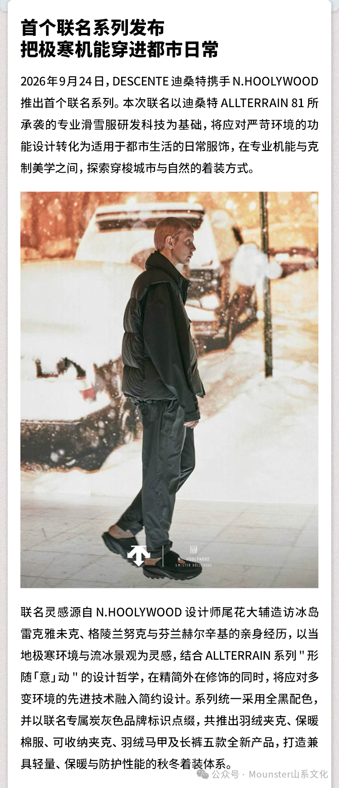
▲ DESCENTE × N.HOOLYWOOD：把极寒机能穿进都市日常 · 点击图片查看原文
· 灵感源自设计师尾花大辅造访冰岛、格陵兰、芬兰的极寒经历；
· 全黑配色+炭灰色标识，共推出羽绒夹克、保暖棉服、可收纳夹克、羽绒马甲及长裤五款产品；
· 羽绒单品填充高蓬松度羽绒并内里用HEAT NAVI®光能发热面料；棉服填充3DeFX®材料；
· 联名长裤使用Double Tailoring System双层轻量面料及ALLTERRAIN 81调节腰带。
原文：Mounster山系文化
叁
跑步品牌Satisfy与Oakley推出新一轮联名，重新演绎2001年Scar镜架与Suture Jacket轮廓；同期AuraLite速干长袖轻盈透气、可随穿着变色，10月13日通过Satisfy发售。
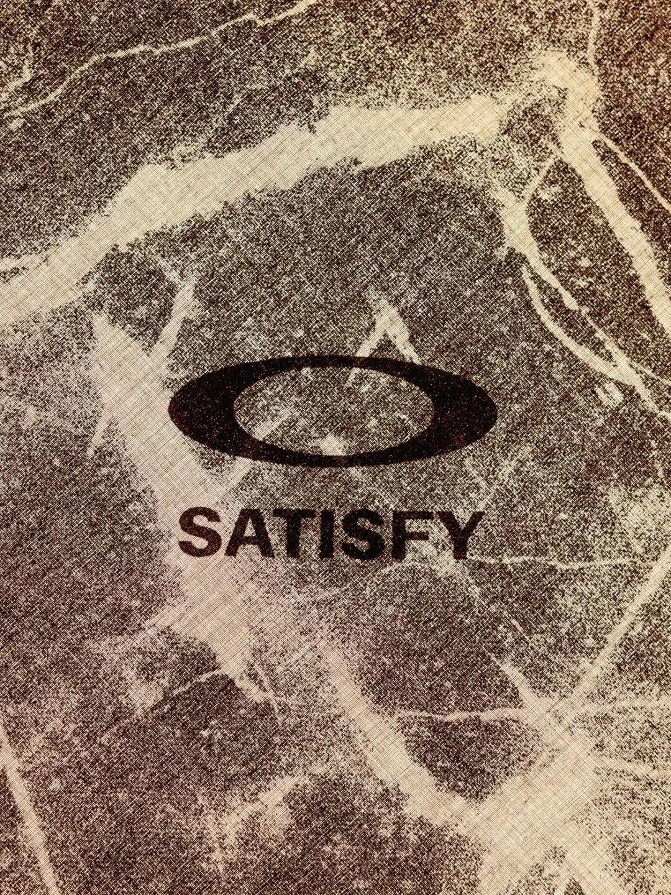
▲ Satisfy × Oakley联名：AuraLite速干长袖（颜料染色工艺） · 点击图片查看原文
· Scar镜框结合Jacket与X-Metal系列特点，两种配色，不同材质拼接；
· Suture Jacket镜框多处向外伸出尖角，同样两款配色；
· 长袖采用AuraLite面料：弹性、快速排汗干燥、易积热部位加强通风；
· 衣身车线为Satisfy标志性细节，颜料染色工艺让面料颜色与质感随时间变化。
原文：马尼亚Mag
肆
慕尼黑运动文化零售单位BSTN带来与Salomon的首个联名鞋款XT-6「IRIDESCENT」，以「凌晨5点」昼夜交替时刻的天空光影为灵感，已在BSTN独家发售，海外定价300美元。
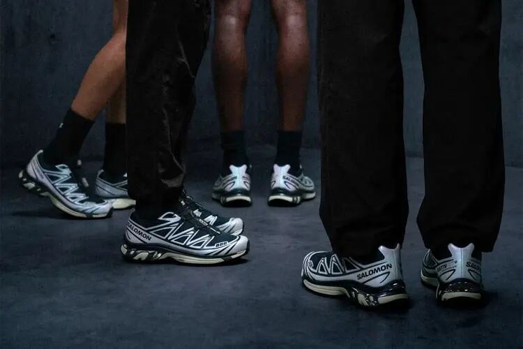
▲ BSTN × Salomon XT-6「IRIDESCENT」：深海军蓝至黑色网眼+淡蓝幻彩TPU · 点击图片查看原文
· 鞋面深海军蓝向黑色过渡网眼，覆以淡蓝幻彩TPU随光线折射不同光泽；
· 鞋舌白色锯齿状车线、鞋跟BSTN联名标识、鞋带标签绣「Common Ground」主题；
· 鞋垫渐变印刷：鞋头冷调蓝缓缓过渡到后跟温暖橙，复刻破晓色彩流转；
· 保留agileCHASSIS底盘、SensiFit包裹、Quicklace快穿、Contagrip大底；货号L45567700。
原文：KicksDaily
伍
9月，FILA FUSION推出秋日主题山脉鞋，延续"山系老爹鞋"标志性风格，本季以"秋日田野调查"为设计线索，并推出潮流代言人田曦薇联名限定款。
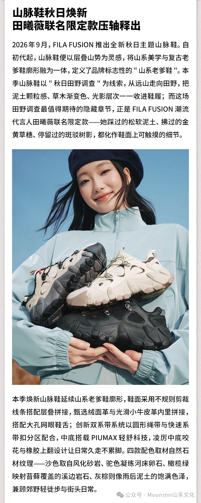
▲ FILA FUSION山脉鞋联名限定款：田曦薇演绎 · 点击图片查看原文
· 鞋面不规则剪裁与拼接材质，创新双系带系统+PIUMAX轻舒科技中底；
· 四款配色（沙色、驼色、橄榄绿、灰棕）取自自然石材纹理；
· 联名限定款漆黑鞋身+灰调花卉印花，鞋头有田曦薇手绘笑脸；
· 联名礼盒为抽屉式双层结构，满版秋冬植物标本印花，附田野调查明信片与解密卡，每双有专属编号。
原文：Mounster山系文化
陆
2026年HUNTER迎来创立170周年与标志性惠灵顿雨靴70周年，品牌大使宋祖儿与超模奚梦瑶共同见证「庄园来信，雨叙170」雨中大秀及双周年主题展在上海余德耀美术馆启幕。
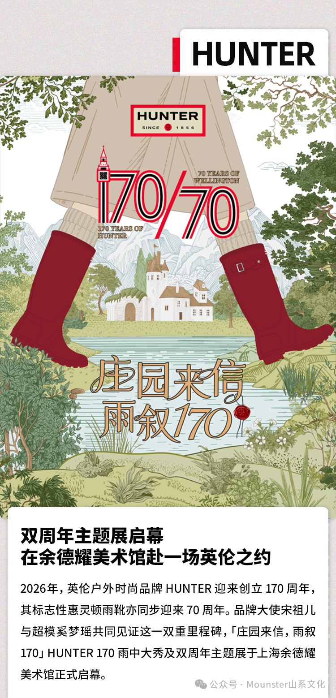
▲ HUNTER 170/70 双周年主题展：英伦庄园视觉 · 点击图片查看原文
· 展览以"时间穿行，经典持续成立"为内核，视觉标识取材大本钟；
· 动线如信笺展开：雨靴喷泉、室外展厅、风尚档案馆（匠人演示28个部件手工制作）、明信片邮筒、英伦公园场景；
· 2026秋冬170周年纪念系列：复刻Hunter绿高筒雨靴点缀170周年典藏Logo，1299元起；
· 展览公众日2026年9月23日至10月11日（9月28、29日闭馆），关注HUNTER官方微信预约。
原文：Mounster山系文化
壹
The North Face官宣演员李昀锐升任品牌代言人，以先锋多面风格演绎北面新ICON——NUPTSE双面穿鹅绒服，开启2026秋冬羽绒穿搭新篇章。
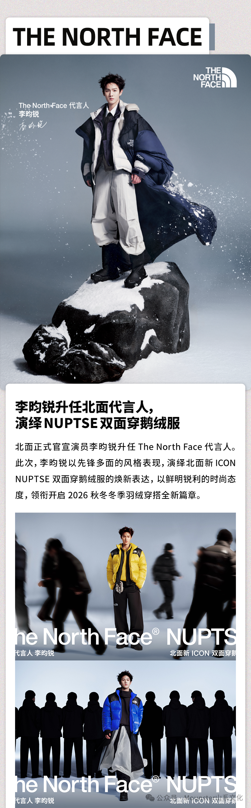
▲ The North Face代言人李昀锐演绎NUPTSE双面穿鹅绒服 · 点击图片查看原文
· NUPTSE以努子峰命名，历经55天高海拔考察，是北面经典ICON；
· 2026年款采用现代科技面料+双面穿设计升级：一面素色哑光再生尼龙，翻面为珠光Pertex® Quantum面料；
· 一衣多穿，兼顾通勤低调与出街鲜明，覆盖校园通勤到城市步行场景。
原文：Mounster山系文化
贰
2026亚洲体育盛事（名古屋）落幕，中国香港代表团创历史最佳成绩，斩获11金19银24铜共54枚奖牌，突破2023年单届8金纪录；FILA Settanto胜利夹克领奖服陪伴港队健儿登上领奖台。
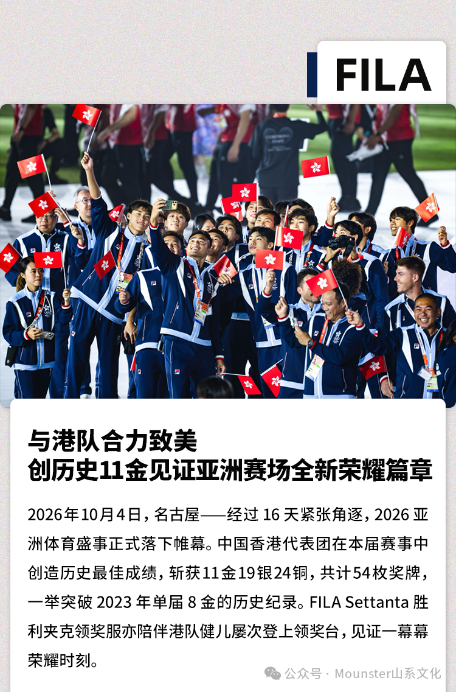
▲ 中国香港代表团11金创历史最佳，FILA Settanto胜利夹克见证荣耀 · 点击图片查看原文
· 自2011年成为港协暨奥委会官方合作伙伴，FILA已陪伴港队登上领奖台207次；
· 本届领奖服从香港标志性高楼提取几何线条，采用IONIC科技面料+"中国香港TEAM HONG KONG CHINA"高密度绣花；
· 经典Settanta胜利夹克曾见证比约·博格五夺大满贯，今在新时代焕发新生。
原文：Mounster山系文化
叁
2026上海8小时耐力赛收官，UNDEFEATED官方赞助车手王一博搭档队友毛骏豪（Melvin Moh）与Rio，驾驶85号赛车夺得GT3 SA组别冠军。
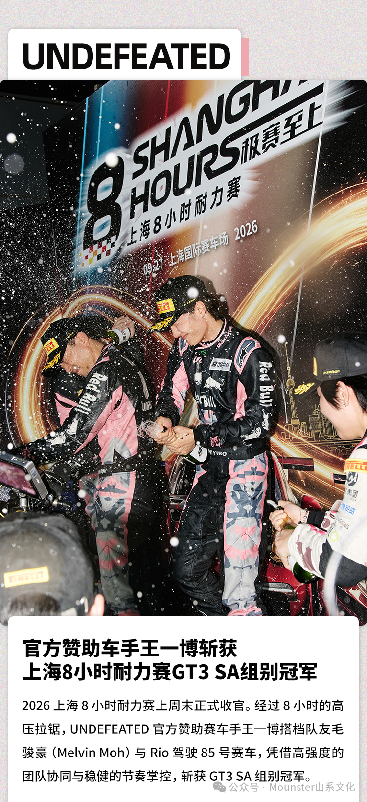
▲ 王一博斩获上海8小时耐力赛GT3 SA组别冠军（85号赛车） · 点击图片查看原文
· 排位赛王一博刷出个人上赛道最快圈速2:02.064，与队友锁定头排发车位；
· 85号赛车换装电镀银镜面涂装，车顶并列YIBO/RIO/MELVIN三位车手名字；
· 赛事期间"UNDEFEATED RACING ZONE"限时快闪空间升级银粉涂装，灵感取自赛车P房。
原文：Mounster山系文化
壹
「什么值得买」联合北京体育大学发布《2026大户外兴趣消费洞察报告》：近半数受访者每月参与2-3次户外运动，市场消费主力集中在千元到五千元价格区间。
▲ 48.33%每月参与2-3次；骆驼26.21%、探路者24.24%；1000-5000元合计约65% · 点击图片查看原文
· 消费逻辑转变：从"为特定运动买装备"转向"结合出行场景选服饰用具"；
· 价值重心不再只盯性价比，品质、情绪体验、自我表达纳入购买考量；
· 露营群体单次人均消费上涨，价格敏感度下降，愿为科技体验支付溢价；
· 参与人群扩圈：女性占比过半，银发群体与下沉市场成为新增组成部分。
原文：什么值得买 · 消费NOTE
贰
国内唯一国家级户外运动产业盛会——2026中国户外运动产业大会将于10月15日至18日在北京昌平区未来科学城举办，这是大会自2023年创设以来首次落地北京。
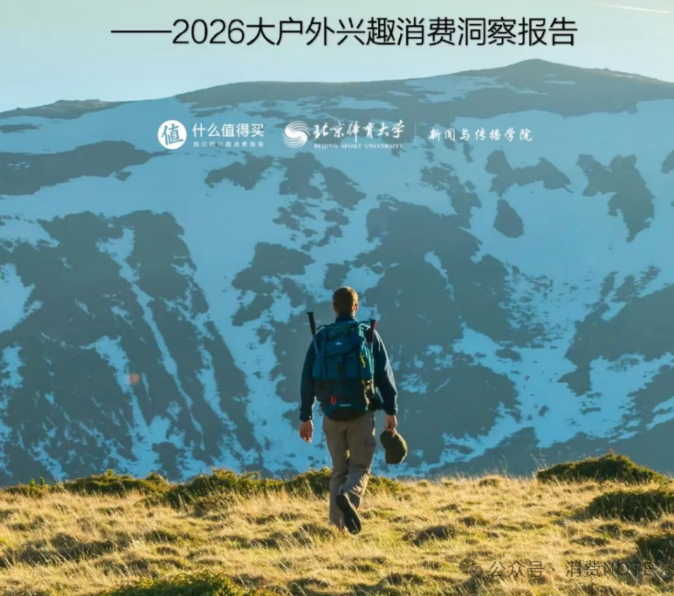
▲ 户外运动从专业圈层走向大众：大会三年让云南体育产业规模三年翻番 · 点击图片查看原文
· 2023年大理首届：三天促成意向签约64个、金额159.08亿元，直接经济效益3.4亿元；
· 2024年四州市联动：近7万参与者，直接经济效益近5亿元，122个项目入省级招商库；
· 2025年云南体育产业总规模突破1000亿元，三年翻番、年均增速23%以上；
· 本届"一主两辅"空间格局（昌平联动通州、门头沟），体验区约5万平方米；
· 配套赛事：中国传奇挑战赛昌平站、居庸关长城越野挑战赛。
原文：体育产业洞察
叁
第九届太格户外节正式开票，将于2026年11月6日至8日回到浙江湖州·泗安里，主题为「旷野呼吸 BREATH OF THE WILD」，由Tigerhood太格有物与SIANLI泗安里共同主办。
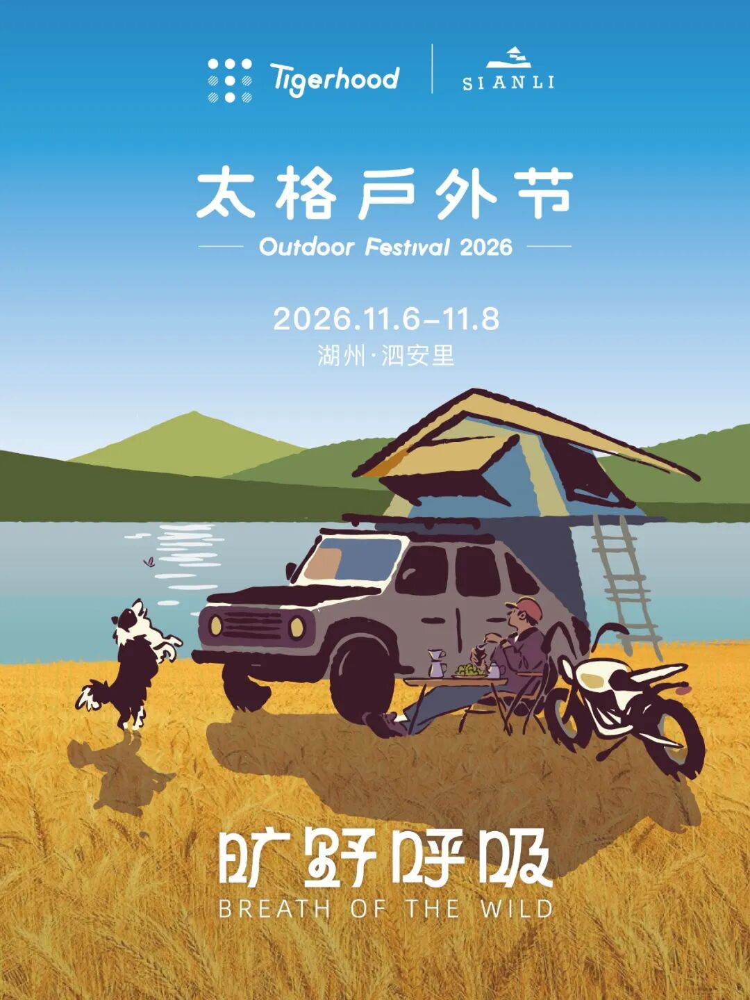
▲ 太格户外节2026海报：2026.11.6-8 · 湖州·泗安里 · 点击图片查看原文
· 已公布内容：汽车露营、生活市集、户外体验与沙龙、咖啡酒饮、宠物友好；
· 今年将有新品牌、新玩家及特别策划现场体验加入；
· 单人单日游玩票199元/人，单人三日汽车露营通票399元/人。
原文：营事编集室 Vol.275
户外视野时报 · VOL.001 ｜ 信息整理自上述公众号文章，文字内容忠于原文，图片仅供辅助理解
点击标题或图片可跳转原文 · OUTDOOR VISION DAILY · EST. 2026